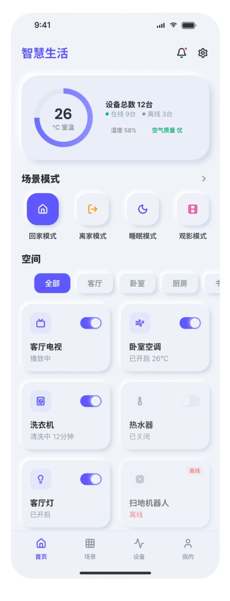
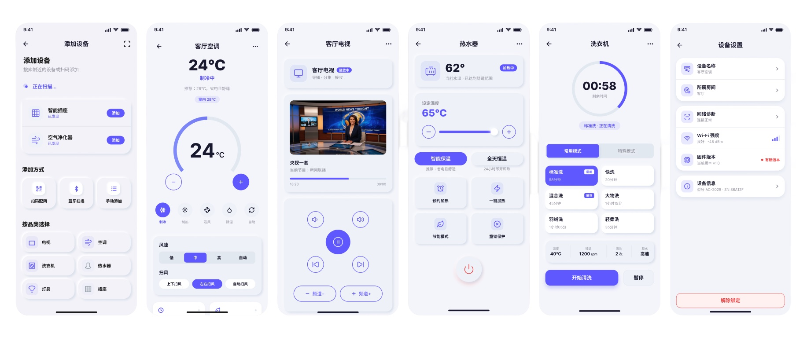
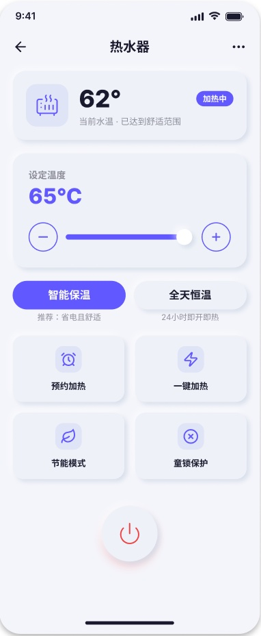
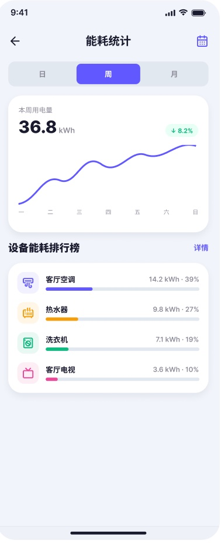
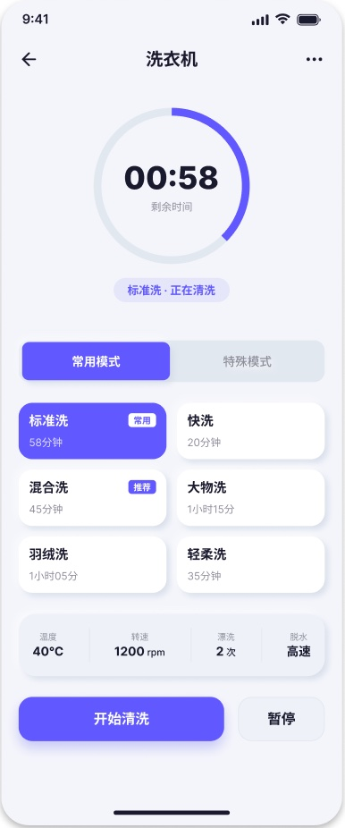

项目概览
Project Smart Home,
From Chaos
to Control
B+C Experience Design Portfolio
Guangzhou, China (Open to Remote)
Whole-House Smart Architecture
Multi-Device Unified Control
Component-Based UI System
Data-Driven UX Optimization
项目背景
智能家居
全屋智能体验架构与多端组件化设计
全栈主设 | C端体验 | 多端组件化
2021-2022
Figma | 交互原型 | 设计系统搭建

关键问题
Smart Home · 全屋智能体验重塑
我们得出结论：
复杂的操作只是冰山一角
Deep Paths
控制入口层级过深，高频操作效率极低。
Missing States
设备状态反馈不直观，用户难以判断运行情况。
Fragmented Logic
不同品类设备操作差异大，学习成本极高。
Chaotic Architecture
首页功能信息堆砌，缺乏统一管控入口。
-2步 核心控制路径 | +62% 查询效率提升 | 94% 状态理解度
解决方案
Strategy & Solutions
核心策略
与破局
缩短高频路径： 首页增加设备卡片与场景快捷入口，让高频控制触手可及。
状态可视化： 统一首页多状态反馈，清晰呈现设备连接与空气质量变化。
信息架构重组： 新增设备管理页统一入口，解决首页功能堆砌问题。

品牌与系统
Design System & Components
视觉语言
与组件系统
多设备组件化规范： 建立卡片化设计规范，覆盖电视、空调、洗衣机等 5+ 设备品类，大幅提升扩展效率与复用率。
一致性视觉语言： 统一开关、进度条、状态图标，降低跨设备的学习成本。
情感化空状态： 为设备离线、无数据等场景定制插画，缓解用户焦虑。

界面交付
界面交付
核心全链路
High-Fidelity UI & Full-Chain Delivery
核心管控闭环： 从首页态势感知、场景模式切换，到单设备精准控制。
多端适配与配网： 极简的扫码/蓝牙配网流程，配网成功率达 85%。
状态与消息触达： 清晰的异常告警、耗材预警（如空调滤网需清洁）通知。



项目复盘
Retrospective & Value Creation
项目复盘
与价值沉淀
降本增效（组件化） ：建立多品类组件化规范，大幅提升新设备的扩展效率与研发交付速度。
体验保障（数据驱动） ：重构核心控制路径，配置误用率降至 2%，首页停留时长增 35%。
系统沉淀（设计资产） ：输出设计规范与组件库，解决多端视觉割裂，支撑日益增多的设备接入。
"用极简的卡片承载复杂的设备，用统一的状态反馈建立安全感，让全屋智能真正触手可及。"